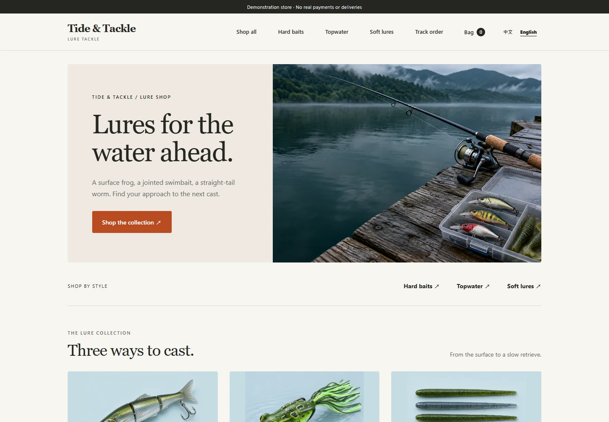
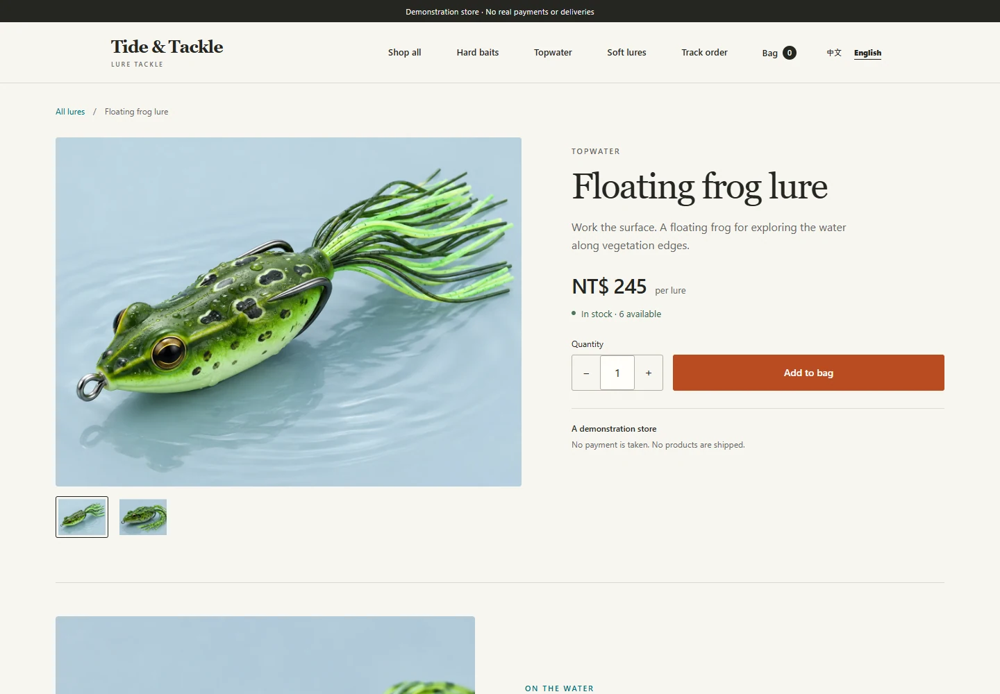
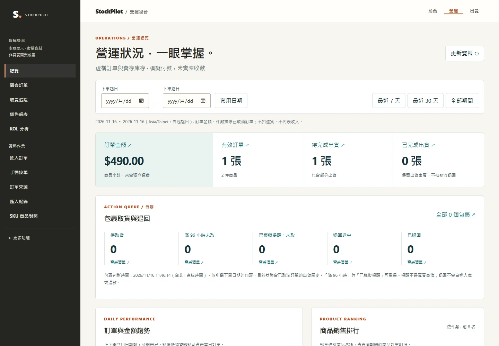
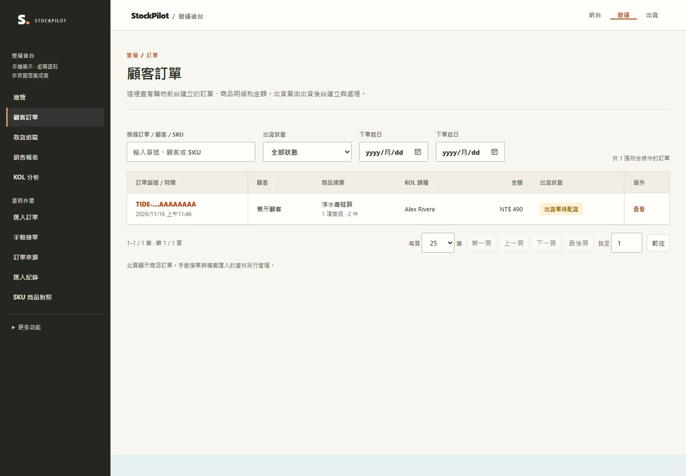
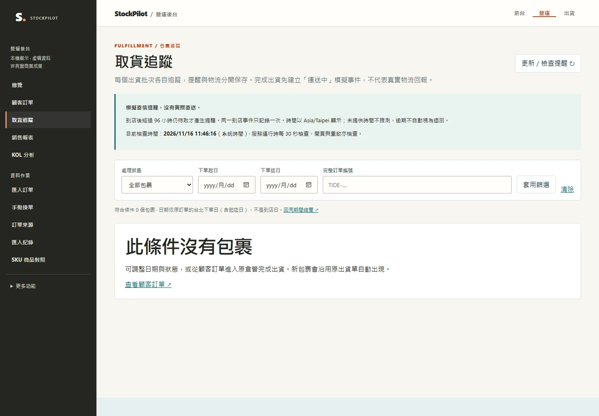
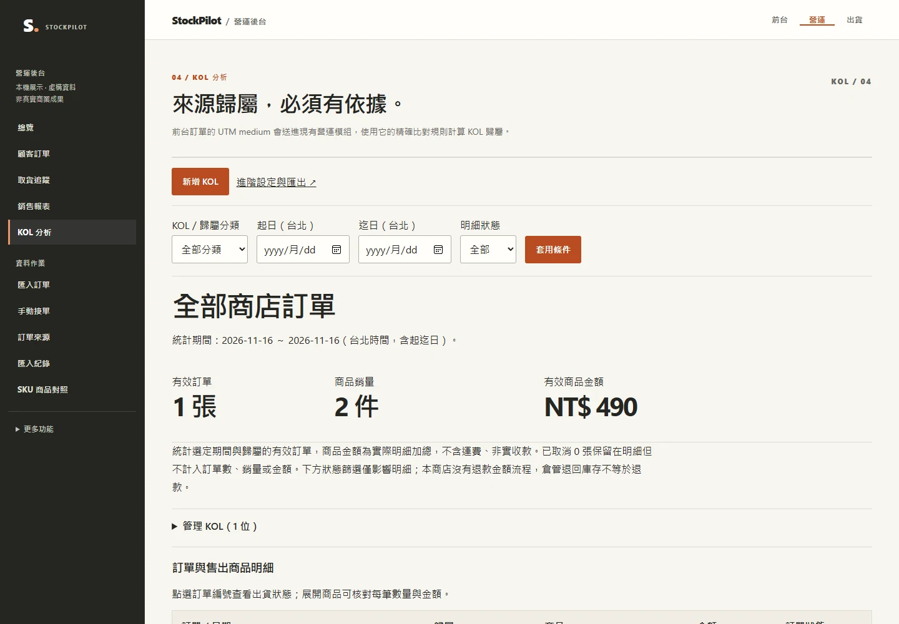
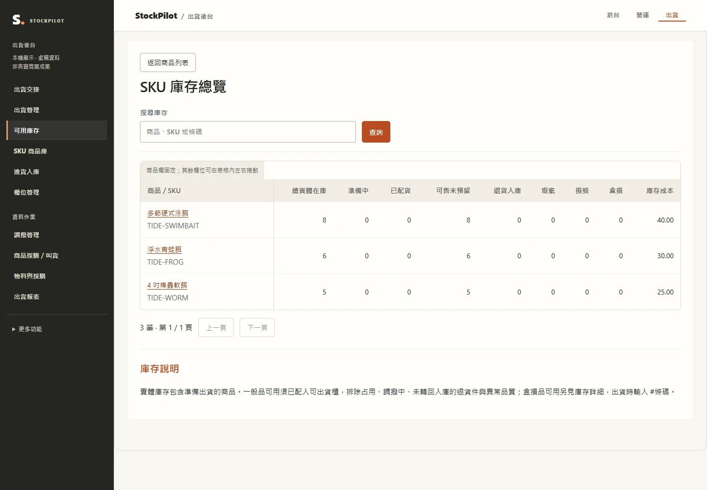
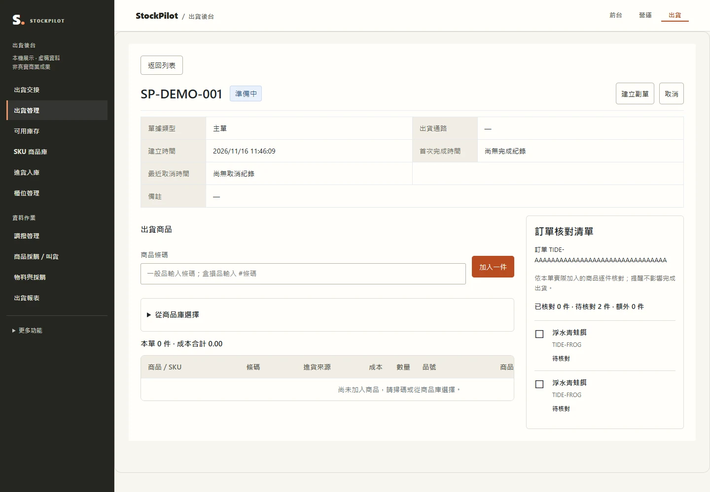

從購物下單到倉管出貨
透過 Tide & Tackle 的範例訂單，查看購物、營運與出貨如何串起來。
靜態展示畫面取自 StockPilot 本機完整版本，使用虛構資料。點圖可查看原尺寸。
Tide & Tackle 購物前台


營運後台




倉管出貨


透過 Tide & Tackle 的範例訂單，查看購物、營運與出貨如何串起來。
靜態展示畫面取自 StockPilot 本機完整版本，使用虛構資料。點圖可查看原尺寸。







